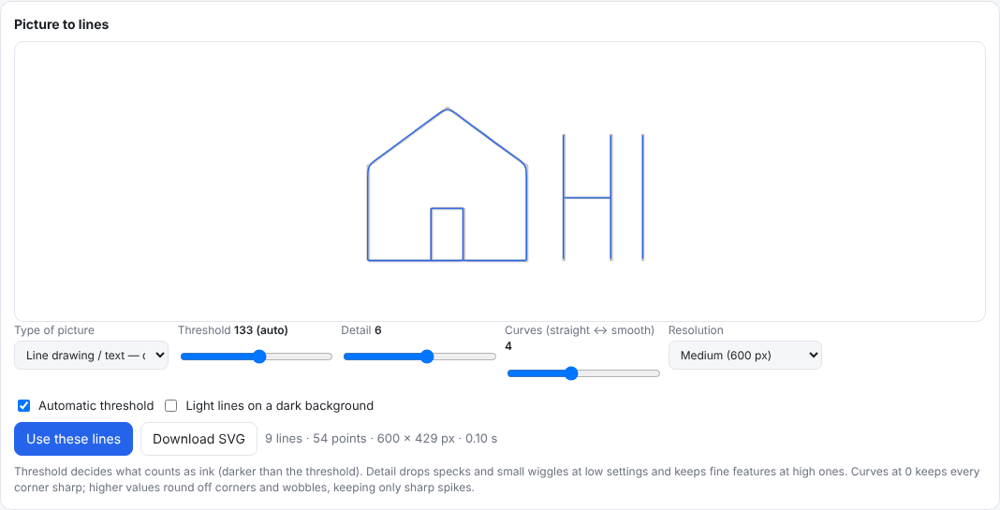

Pen plotter for SVGs and pictures
Draw SVG files, or turn pictures (PNG, JPG, WEBP, GIF, BMP) into lines: outlines for shapes, single centre lines for line art and lettering, or edges for photos. Threshold, detail and smoothing are adjustable, and the lines can be saved as SVG.
Set the size in millimetres, turn, mirror and drag the drawing on a map of the paper. The green zone shows where the pen can reach, and every line is kept inside it. Strokes are ordered to cut pen-up travel.
